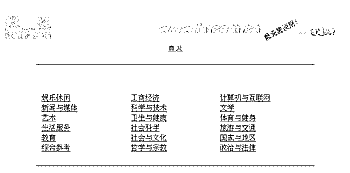
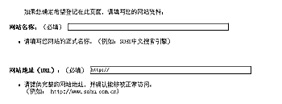

|
|
| 当前位置：电脑报电子版 > 1999 年 > 34 期 > 大众网络 > 怎样将主页加入搜索引擎 |
| 《 怎样将主页加入搜索引擎 》 |
| 你想要自己的主页广为人知吗？在每天都有成千上万个新站点推出的网络上，即使你的主页再出色，也应努力宣传自己，否则你的“家”就会成为一个被遗忘的角落。现给出一个推广主页诀窍——将主页加入搜索引擎。 顾名思义，将主页加入搜索引擎就是指在各大搜索引擎上登记自己的站点，让别人可以搜索到你的站点。 下面这些著名网站你可去登记： 搜狐：http://www.sohu.com.cn 雅虎中文网站：http://gbchinese.yahoo.com 雅虎:http://www.yahoo.com 网易：http://www.nease.net 新浪网：http://www.sina.com.cn 首都在线：http://www.263.net 电脑报：http://www.cpcw.com 上海热线：http://www.online.sh.cn 163：http://www.163.net 21cn:http://www.21cn.com 下面以搜狐为例，来谈一谈怎样将主页加入搜索引擎： 1.进入搜狐主页，找到“网页登记”，单击。 2.进入下一页（图1），这里有三个选项，我们选第二项“ 没有，建议登录”。 3.接下来就是为你的网站选择所属的目录（图2），一般有多级目录，当认为所选的目录合适时，就可以在这一页的下面填写你的网站资料（图3），按照它的提示一步一步填写，然后点击“递交”，OK,一切就搞定了。 按照上面的方法，再到其它搜索引擎登记。做了这么多，也该休息一下了，就等着越来越多的客人去你“家”作客吧！ (北京 骆德全) |
| 下载本期推荐软件 | 页 首 |
| 《电脑报》版权所有，电脑报网站编辑部设计制作发布 |